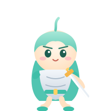
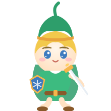

周璐学霸之路
每天进步一点点 ✦ 成为闪闪发光的自己！

初中科目 · 选择你的冒险
点击卡片进入对应科目的学习页面，每个科目都有专属资料和小工具哦！
语文
感受文字之美，积累诗词古文。学霸同步笔记带你系统梳理语文知识。
进入学习 →
数学
逻辑与推理的冒险之旅！搭配北师大版数学图谱，哪里不会点哪里。
进入学习 →
英语
外研版七年级上册 · 课文单词听力 53 段音频全收录，磨耳朵神器！
进入学习 →
物理
电、力、光、热……物理的世界充满奇妙！搭配 10 门 3D 实验课件探索。
进入学习 →
化学
从微观世界到五彩斑斓的化学反应，25 门 3D 实验课件带你安全做实验！
进入学习 →
生物
走进生命的奥秘！配合「生生·不息」记忆卡，边背边记超轻松。
进入学习 →
历史
华夏五千年，上下求索！「华夏·溯源」记忆卡带你在时间轴上畅游。
进入学习 →
地理
足不出户看世界！「山海·经纬」记忆卡 + 14 门地理实验课件一起探索。
进入学习 →
道德与法治
明德修身，向阳成长！「明德·修身」记忆卡帮你把必背金句记得牢牢的。
进入学习 →
特色学习工具
记忆卡、实验舱、听力角……都是为你量身定做的小帮手！
伙伴寄语
三位伙伴想对周璐说……
像林克一样勇敢
未知的地图等你点亮，每一道难题都是新的神庙！

像蛋小黑一样元气
每天进步一点点，小小蛋仔也有大大能量！
像安迷修一样坚持
守护好自己的约定，做一个温柔又坚定的人！